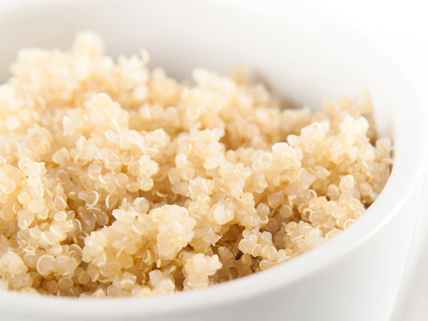
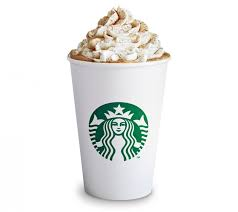

Jabuka je najrasprostranjenija vrsta voća; osvježavajuća, kiselo-slatkog okusa i svojstvene arome. Plod jabuke bogat je hranjivim sastojcima čija količina ovisi o vrsti te o načinu uzgoja, a gotovo svi potrebni nutrijenti prisutni su barem u minimalnim količinama. Jede se sirova, ali i kao dodatak slatkim i slanim jelima.
Jabuka
Quinoa
Quinoa je jedna od najstarijih žitarica na svijetu. Svjetska zdravstvena organizacija (FAO) uspoređuje hranjivost i nutritivni sastav s namirnicom kao što je mlijeko. Kuhana quinoa je zanimljiv dodatak salatama, juhama, prilozima, povrtnim i mesnim jelima, a upotrebljava se i u pripremi kolača i kruha. Ja ju pripremam "na salatu".

Quinoa
Kava
Kava je tropska biljka, grm ili stablo s plodovima crvenih bobica koje nalikuju trešnji. Potiče koncentraciju, kognitivne procese, ubrzava procese obrade informacija u mozgu, ublažava glavobolju i podiže raspoloženje. Ja volim kavu sa svim dodacima, ali najčešće pijem tursku.

Kava
Banane
Jedem ih kao međuobrok (samu ili kao dio voćne salate), dodatak smoothie-u, ali volim ih i u kolacima. To je definitivno moje najdraže voće.
Banane
Voda
Voda je obična tekućina, bez boje okusa i mirisa. Smatram ju najpotrebnijim, njaboljim i najzdravijim napitkom. Potrebno je piti tijekom cijeloga dana i izbjeći pojavu žeđi odnosno dehidraciju.